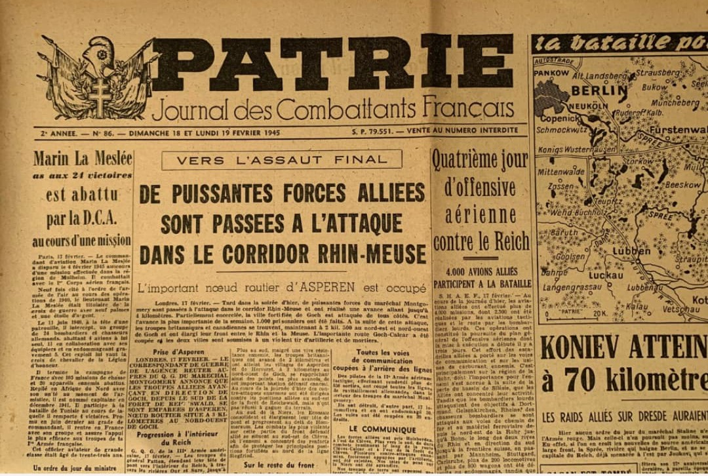
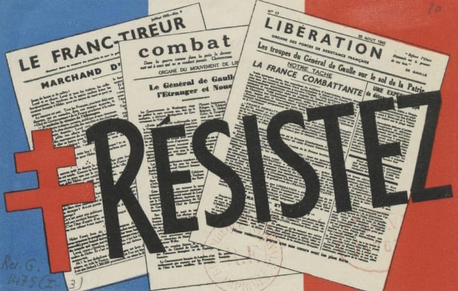
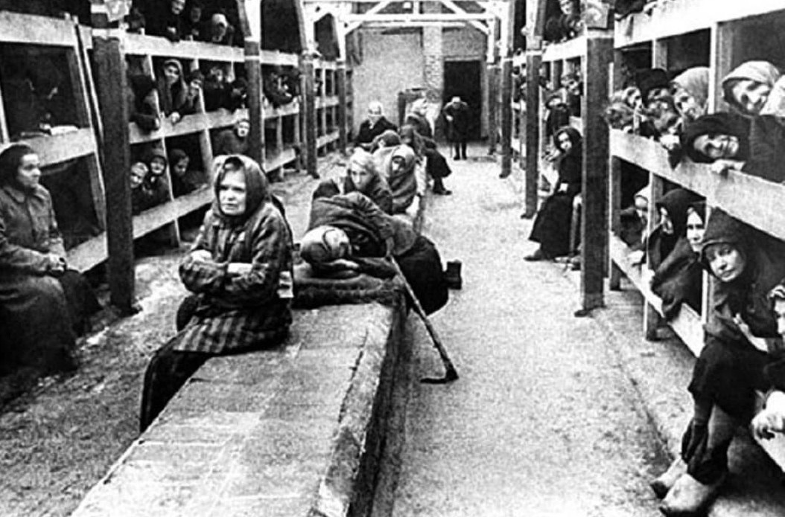
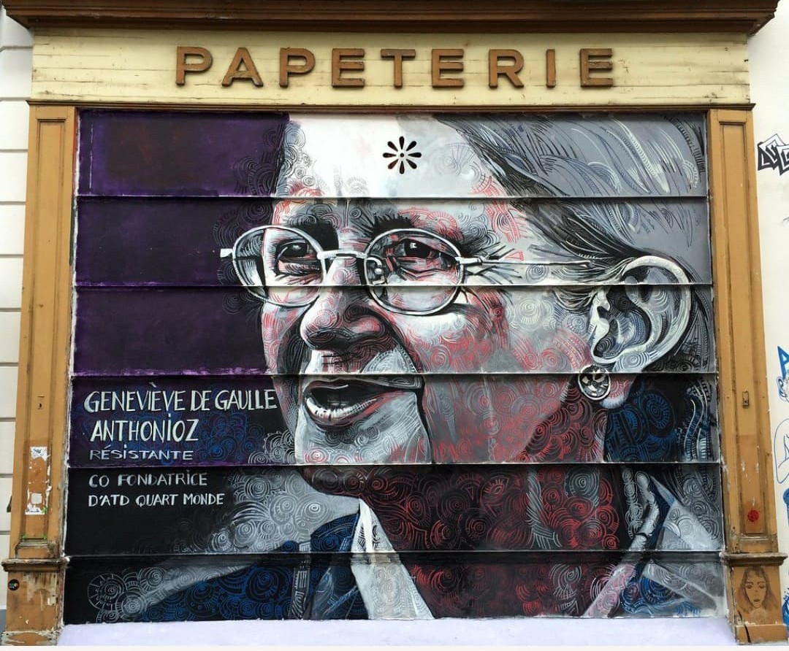

Pseudonyme de résistance : “Galia”

Dans la presse clandestine, Geneviève de Gaulle signe sous le pseudonyme “Galia”. Elle rédige des textes, transporte des articles et contribue à la diffusion de journaux illégaux, notamment au sein du mouvement Défense de la France.
“Galia” devient l’une des signatures discrètes mais déterminantes de la Résistance écrite.
Pseudonyme de résistance : « Galia »
Le pseudonyme « Galia » utilisé par Geneviève de Gaulle dans la presse clandestine n’est pas choisi au hasard. Il possède une forte dimension historique et symbolique.
En latin, Gallia désigne la Gaule, territoire fondateur de l’identité française. En période d’Occupation, employer un nom qui évoque la Gaule est un clin d’œil discret à la France qui résiste.
Ce pseudonyme est aussi un écho subtil à son nom de famille « de Gaulle ». « De Gaulle » → « Gaule » → « Gallia » → « Galia ». Une manière intelligente de conserver un lien identitaire sans jamais révéler son nom réel.
« Galia » est enfin un nom court, féminin, crédible, parfaitement adapté à la clandestinité et à la signature d’articles dans la presse résistante.
Actions clandestines (1940–1943)

Ses missions sous l’identité “Germaine Lecomte” :
- Liaison entre groupes résistants
- Distribution de tracts et journaux clandestins
- Participation au Groupe du Musée de l’Homme
- Enlèvement de symboles nazis (affiches, drapeaux)
- Transport de documents et messages
- Soutien à la presse clandestine
Ces actions discrètes sont essentielles au fonctionnement de la Résistance intérieure.
Arrestation

En 1943, la Gestapo lance une opération contre le réseau Défense de la France. Geneviève de Gaulle est arrêtée lors d’un rendez-vous clandestin surveillé. Elle se présente sous son alias “Germaine Lecomte” et ne révèle rien.
La Gestapo découvre son identité réelle après avoir saisi des documents sur un autre résistant : une note indique clairement “Germaine Lecomte = Geneviève de Gaulle”. Les Allemands comprennent alors qu’ils détiennent la nièce du chef de la France Libre.
Déportation à Ravensbrück

Classée comme prisonnière politique, Geneviève de Gaulle est déportée au camp de Ravensbrück le 2 février 1944. Elle y subit la faim, les maladies, les travaux forcés et les violences du camp des femmes. Elle survit et est libérée en avril 1945.
Pression sur Charles de Gaulle

Pour les Allemands, détenir la nièce du Général de Gaulle est un moyen de pression : prouver qu’ils peuvent atteindre son entourage et espérer un levier politique. Geneviève devient un otage de valeur.
Réaction de Charles de Gaulle

À Londres, de Gaulle apprend l’arrestation puis la déportation de Geneviève. En public, il reste impassible : il refuse toute négociation avec l’Allemagne, même pour sa propre famille, afin de ne pas affaiblir la légitimité de son combat.
En privé, il est profondément touché. Il fait suivre son dossier par la France Libre, demande des nouvelles régulièrement et comprend la gravité de sa déportation à Ravensbrück.
Après la guerre, il la considère comme une héroïne et elle reçoit la Croix de la Libération.
Importance historique

“Germaine Lecomte / Galia” incarne la Résistance invisible : identités empruntées, presse clandestine, actions discrètes mais essentielles. Son rôle n’est pas médiatique, mais historique et mémoriel.
Elle appartient pleinement à la catégorie Histoire & Mémoire – Résistance.